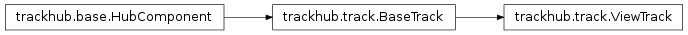

trackhub.ViewTrack¶

-
class
trackhub.ViewTrack(view, *args, **kwargs)[source]¶ Bases:
trackhub.track.BaseTrackRepresents a View track. Subclasses
Track, and adds some extras.Upon being added to a CompositeTrack, the view tag will be checked.
Methods
-
__init__(view, *args, **kwargs)[source]¶ Represents a View track. Subclasses
Track, and adds some extras.Upon being added to a CompositeTrack, the view tag will be checked.
-
add_child(child)¶ Adds self as parent to child, and then adds child.
-
add_params(**kw)¶ Add [possibly many] parameters to the track.
Parameters will be checked against known UCSC parameters and their supported formats.
E.g.,
add_params(color=‘128,0,0’, visibility=’dense’)
-
add_parent(parent)¶ Adds self as child of parent, then adds parent.
-
add_trackdb(trackdb)¶ Attach this track to a parent TrackDb object.
-
add_tracks(subtracks)[source]¶ Add tracks to this view.
Parameters: subtracks – A single Track instance or an iterable of them.
-
leaves(cls, level=0, intermediate=False)¶ Returns an iterator of the HubComponent leaves that are of class cls.
If intermediate is True, then return any intermediate classes as well.
-
remove_params(*args)¶ Remove [possibly many] parameters from the track.
E.g.,
remove_params(‘color’, ‘visibility’)
-
render()¶ Renders the object to file, returning a list of created files.
Calls validation code, and, as long as each child is also a subclass of
HubComponent, the rendering is recursive.
-
root(cls=None, level=0)¶ Returns the top-most HubComponent in the hierarchy.
If cls is not None, then return the top-most attribute HubComponent that is an instance of class cls.
For a fully-constructed track hub (and cls=None), this should return a a Hub object for every component in the hierarchy.
-